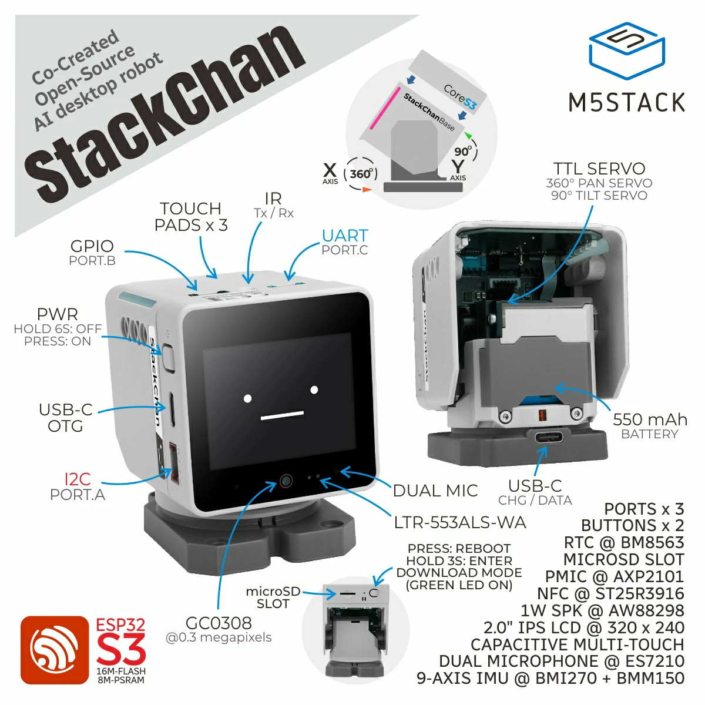

E：K151 造型的双轴自制路线
官方 STL 可用于结构复刻；本路线使用普通 CoreS3 和市售 SCS0009，电子方案及标定与官方 K151 不同。接线和固件已按官方资料修正，尚未完成实物试装与整机验收。旧版随附 PDF 保留作历史资料，电气操作以本 Markdown 和 共用固件流程 为准。

0. 路线与边界
CoreS3 + 两只市售 SCS0009 + 3.3V UART→TTL 半双工转换器 + 独立 5V 电源，搭配官方 K151 结构 STL。使用本指南的标定驱动构建通用 CoreS3 固件，不直接刷 K151 专用预编译包。
官方 K151 另有 PY32 舵机电源管理、灯效、触摸、NFC、红外、电量监测及专用 raw 零位。普通 CoreS3 不支持官方 StackChan World App。市售 SCS0009 的规格是 300°位置控制，不能据同型号名称推导支持官方水平无限旋转。
1. 官方资料与可复用部分
| 项目 | 官方资料 | 本路线处理 |
|---|---|---|
| 两轴总线 | GPIO6 TX / GPIO7 RX，1Mbps，ID1/ID2 | 保留信号选择，另配合格转换电路 |
| raw 零位 | K151 专用驱动 yaw460 / pitch620 | 不照搬；市售舵机按实际 raw 位置安装和标定 |
| 舵机供电 | 官方底座带 PY32 管理 | 桌面调试用独立 5V 电源并共地 |
| 运动范围 | 官方整机 Y 轴建议 5-85° | 仅适用于官方机构；自制按相对零位和干涉测量限位 |
| 结构文件 | 10 个 STL | 先验证零件尺寸与安装方式再打印整套 |
来源：M5Stack 官方产品资料、社区 v1.1.0 K151 平台。旧 PDF 原理图、当前 KiCad 和商品维修件可能不是同一版本，不以它们的存在承诺整机兼容。
2. 物料与采购前确认
| 物料 | 数量 | 要求 |
|---|---|---|
| 普通 CoreS3 | 1 | 确认具体型号及背面连接器；官方 K151 维修核心是另一种目标 |
| 市售 SCS0009 | 2 | 确认所购规格/固件、300°量程及 raw 位置反馈，先改成 ID1/ID2 |
| UART→TTL 半双工模块 | 1 | UART 侧有 TX/RX、3.3V 逻辑；舵机側单线 DATA；有可靠释放及回包时序 |
| URT-1 或已验证飞特配置工具 | 1 | 电脑改 ID/波特率及测 raw 位置，不能当作普通 TX/RX 短接线 |
| 稳压 5V 电源 | 1 | 按双舵机峰值和压降留余量；台架先限流逐只测试 |
| 线材及转接件 | 按实测 | 可靠接地及拉力固定，不以杜邦线接触替代长期连接 |
| 轴承、螺丝、安装件 | 按所购零件测量 | 本仓库未完成规格签核，先测 STL、轴径、安装孔、主机卡位再采购 |
原版 450-650 元只是未核价估算，不能包含未定规格的适配件和工具。STS3215/SMS 等型号不能作为只改安装孔的直接替代：接口寄存器、字节序、量程、电压和驱动均需单独适配。
初次采用桌面供电。便携版需要电池保护、合适升压/充电路径及峰值电流验证；不要把裸 3.7V 电池直接当作稳定 5V 舵机电源。
3. 舵机配置
- 只连接一只舵机，用 URT-1 与飞特软件读取型号、波特率及位置。
- 第一只保持 ID1，第二只改 ID2，均为 1Mbps；写入后掉电重读。
- 不装摇臂，发送 raw=512；记录实际轴位置及小 raw 增量对应的角度。
- 检查位置反馈和方向。不要短接普通 USB-TTL 的 TX/RX，也不要在未确认意义时使用 Recovery。
SCS0009 接口按所附 规格书和实际插头确认：GND / VCC / Signal。不要只按线颜色判定。规格书中的中位标签与量程说明需结合实测，不把 raw511 当作通用绝对 90°。
4. 结构打印与试装
文件在 ../stl/k151-body/，来源为 M5Stack 结构仓库，许可按原仓库核对。
| 文件 | 用途 |
|---|---|
| StackChan-MainBody.stl | 主体/主机安装 |
| StackChan-Base.stl、StackChan-BaseCover.stl | 底座及盖 |
| StackChan-ServoBody.stl、StackChan-ServoArm.stl | 舵机支架及臂 |
| StackChan-ServoCover.stl、StackChan-ServoSideCover.stl | 舵机罩 |
| StackChan-BearingFixture.stl | 轴承固定 |
| StackChan-LightGuideBar-A/B.stl | 导光条，灯效可省略 |
先打印支架/臂验证所购舵机和轴承，不通过则调整模型；随后验证普通 CoreS3 外形、连接器高度和走线空间，再打主体。PLA/PETG 可作试装，强度件加壁厚及填充；安装方向、支撑和公差按实际打印条件选择。没有灯效时导光件可省略。
5. 接线
CoreS3 GPIO6 (TX) ── UART TX ┐
CoreS3 GPIO7 (RX) ── UART RX ├─ 合格 TTL 半双工模块 ── DATA ── 两只舵机 Signal
CoreS3 真正 GND ─── 模块 GND ┘ │
└──────────────── 外部电源负极 ─────────────── 两只舵机 GND
外部稳压 5V 正极 ────────────────────────────────── 两只舵机 VCC
主机经自己的 USB 供电，独立电源 +5V 不与主机 +5V 直接并联。转换模块自身供电按其说明选择；UART RX 必须满足 3.3V 逻辑电压，不能让模块把 5V 输出到 ESP32 GPIO。
按 CoreS3 官方 M5-Bus 图：21=GPIO6、22=GPIO7、1/3/5=GND、28=5V；26=GPIO14/I2S_DIN，不是 GND。从厂商规定方向核对位置，用万用表在断电时确认真实共地及无短路。
旧版“RX 串二极管、TX 串220Ω”接法已撤销：电阻不能让 TX 高阻释放总线，RX 二极管也不能保证接收低电平。不用普通 RS-485 A/B 模块替代 TTL DATA 模块。
6. 固件与标定
按 完整共用流程固定社区 v1.1.0，复制 cores3-scs0009.json 和 scservo-calibrated-driver.js 到上游 host/app。JSON 覆盖 scservo-driver 模块，默认 TX6/RX7@1Mbps、ID1/ID2、300°量程、raw 零位512、pan ±10°、tilt ±5°。
本驱动明确传递 driver.serial 并用 raw 命令换算；原版 scservo 固定200°且不读取该字段，不能漏复制替换驱动。实测后设置 angleRangeDegrees、panZeroRaw/tiltZeroRaw、轴方向和上下限，不使用旧版无效的 offset 字段。
构建通用 esp32/m5stack_cores3 并烧录它的产物。不执行默认 npm run flash/deploy，不直接刷 m5stackchan_cores3 专用包：该目标锁定专用驱动，并带 PY32/电源配置及 K151 参考零位。
7. 装配和验收
- 无摇臂台架确认供电、ID、应答及位置读回。
- 按实测 raw 零位让轴归位，断电安装摇臂，让头部正前水平；方向不对先改配置，不硬掰。
- 试装底座、两轴、轴承及主机；为线束留活动余量，固定转换模块，避免电气件碰到活动件。
- 安装 小范围验收 MOD，一次左右5°、上下3°、回中。CoreS3 不需要 A/B/C 实体键。
- 检查回包、读回角度、复位/压降、异响及机械干涉后再合盖。扩大范围需重新测量；装配前断开舵机电源。
本驱动没有新增温度/电流堵转保护。串行反馈存在不等于自动具备整机保护。当前只完成模拟协议测试，仍需实物验证。
8. 路线 G：用 m5-pantilt 替代外置转换器
板上串行通路使用 R13/R14，R9-R12 不装；CoreS3 映射到 GPIO17/18，配置文件改对应 transmit/receive。断电测出实际板上 DI/RO 与主机的连通关系，注意 KiCad 与厂商引脚图观察方向不同。不能沿用旧 Core 的 GPIO17/16。
保持主机和舵机同为1Mbps起测，按波形及应答决定是否共同降速。原版“板按 ≤115200 设计”缺少依据，已撤销。下载完整制造包使用 manufacture/jlcpcb/m5-pantilt-gerbers-jlcpcb.zip，不是只含丝印/钻孔的 gerber/。
这块板和 K151 的固定方式尚未实测，需要实际转接件；电池、灯效和充电也不自动等价于官方底座。详情见 制造说明。
9. 与官方整机的差异
| 项目 | 本路线 |
|---|---|
| 双轴动作与位置反馈 | 标定及台架验收后可用，未完成整机实测 |
| 水平无限旋转 | 不承诺；市售300°位置舵机按该量程使用 |
| 灯效/摸头/NFC/红外 | 没有，另行开发 |
| 官方 App | 不支持普通 CoreS3 |
| 电池/充电/电量计 | 桌面方案无此功能，便携另设计 |
| 整机堵转保护 | 不承诺；需硬件保护和机械限位 |
先以桌面双轴机完成验证，再逐项增加结构、便携电源和外围功能。